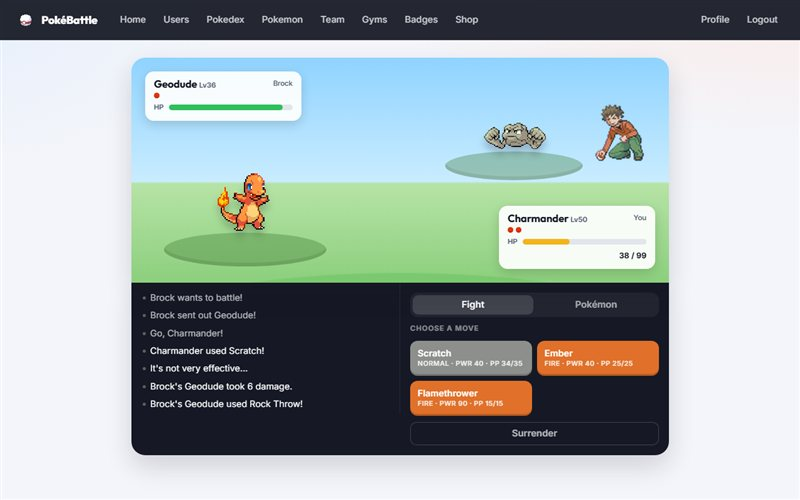
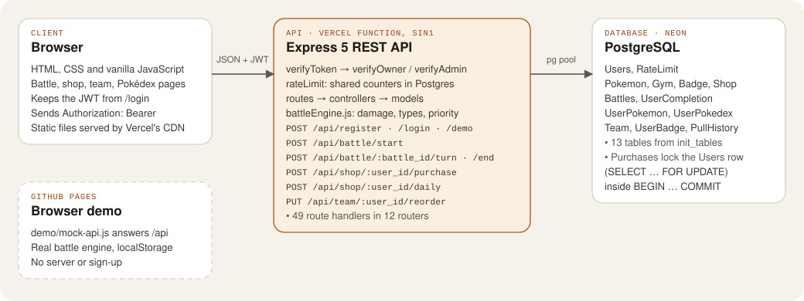

Work / Case study 01
Pokémon Gym & Battle System
A full-stack Pokémon game on a Node.js and Express REST API over PostgreSQL. I first built it for a Year 1 module, then rebuilt it in Year 2 so it was safe to put on the public internet.
- Role
- Solo: API, database, front end and deployment
- When
- Year 1 version Jul 2026, rebuilt 22–29 Oct 2026
- Size
- 49 API routes, 13 tables, 20 API tests
- Hosting
- Vercel + Neon, browser demo on GitHub Pages

The problem
The Back-End Development module asked for a REST API behind a gamified system. I built a Pokémon game: players catch Pokémon from a shop, build a team and battle their way through eight gyms. My Year 1 version worked in a demo, but it was never meant to face real users.
When I came back to it in Year 2 I wanted it live, on free hosting, where strangers could sign up and play. That raised the bar. A shared server needs every player’s data protected from every other player, coins that can’t be spent twice, and rewards that can’t be farmed. The Year 1 code failed all three.
My role
This was an individual project. I wrote the API, the database schema, the battle engine and the front end, and I did the Year 2 rebuild: the security fixes, the port from MySQL to PostgreSQL, the tests, CI and both deployments.
Stack
- Back end
- Node.js, Express 5, node-postgres (
pg) - Database
- PostgreSQL on Neon (MySQL in the Year 1 version)
- Auth
- JSON Web Tokens, bcrypt password hashing, rate limits stored in Postgres
- Front end
- HTML, CSS and vanilla JavaScript
- Testing
- Node’s built-in test runner and
fetch, against a real Postgres - Delivery
- GitHub Actions, Vercel (serverless, Singapore region), GitHub Pages
Architecture
The browser talks to one Express app. Locally it runs as a normal server. On Vercel the same app is wrapped as a single serverless function (api/index.js), and the static front end is served from Vercel’s CDN. Every request passes through the same middleware chain before it reaches a controller: verify the token, then check ownership or admin rights, then rate limits.

Users, Battles, UserPokemon, Team, PullHistory and RateLimit. Open the diagram full size.
The hard part: who is allowed to do what
1. Logging in isn’t the same as being allowed
In Year 1 every player route took the player’s id from the URL and only checked that the request carried a valid token. It never checked whose token it was. Any logged-in player could spend another player’s coins or rearrange their team just by changing the number in the URL.
Year 1: src/routes/shopRoutes.js
router.post('/:user_id/purchase', jwtMiddleware.verifyToken, shopController.purchaseItem);
// a valid token for user 2 could buy on behalf of user 7The fix was a small middleware that runs after verifyToken. It compares the account in the request with the account in the token and answers 403 if they differ. It now guards the shop, team, Pokédex and owned-Pokémon routes. Battles go one step further and load the battle by both its id and the caller’s id, so you can’t play someone else’s turn. Routes that change shared game data (gyms, badges, Pokémon) need an admin id from ADMIN_USER_IDS, and nobody is an admin by default.
Now: src/middleware/jwtMiddleware.js
module.exports.verifyOwner = (req, res, next) => {
const requestedId = req.params.user_id ?? req.body.user_id;
if (parseInt(requestedId) !== res.locals.userId) {
return res.status(403).json({ message: "Forbidden: Not your account" });
}
next();
};
router.post('/:user_id/purchase',
jwtMiddleware.verifyToken, jwtMiddleware.verifyOwner, shopController.purchaseItem);2. A purchase is all or nothing
A purchase takes coins, rolls a Pokémon, adds it to the player’s collection, records the pull and sometimes refunds a duplicate. In Year 1 these were separate queries in nested callbacks: read the balance, check it, deduct the coins, then add the Pokémon. If a later step failed, the coins were already gone. Two requests sent at the same moment could also both pass the balance check before either one deducted anything.
Now each purchase runs inside one transaction on one connection. The first query locks the player’s row with SELECT … FOR UPDATE, so a second purchase for the same player waits until the first one commits. Any error, including “not enough coins”, rolls the whole thing back.
src/controllers/shopController.js (shortened)
async function withTransaction(fn) {
const conn = await pool.promise().getConnection();
try {
await conn.beginTransaction();
const result = await fn(conn);
await conn.commit();
return result;
} catch (err) {
await conn.rollback();
throw err;
} finally {
conn.release();
}
}
const gachaPool = await getGachaPool(); // read before the transaction starts
const payload = await withTransaction(async (conn) => {
const user = await shopModel.getUserForUpdate(conn, user_id); // FOR UPDATE
if (user.coins < cost) throw new ShopError(403, "Not enough coins.");
const { pulls, refund } = await catchPulls(conn, gachaPool, user_id, rarities, item.price);
await shopModel.addPullHistory(conn, user_id, item.item_name, pulls);
await shopModel.updateUserAfterPurchase(conn, { user_id, coinChange: refund - cost, pity_count: pity });
...
});Moving to Postgres showed that the shop read its list of catchable Pokémon on a second pool connection while the transaction was still holding the first. On a small serverless pool that can stall. Reading the list before the transaction starts fixed it.
3. Rewards only for a real win
The Year 1 end-battle endpoint read the result from the request body, so a player could send "result": "win" and collect gym coins without fighting, as often as they liked. Any logged-in player could also create or delete gyms. Now the server decides the result. A reward needs a won battle that belongs to the caller and hasn’t been claimed yet, gyms have to be beaten in order, and only admins can change gyms.
What I tested
tests/api.test.js starts the real Express app and calls it over HTTP against a real PostgreSQL database. It uses Node’s built-in test runner and fetch, so it adds no packages. The 20 tests cover the rules that matter most:
- Auth: sign-up, duplicate names ignoring case, passwords never stored in plain text, wrong passwords and forged tokens rejected.
- Ownership: one trainer can’t buy, pick a starter or read a profile on another trainer’s account, and only admins can change gyms.
- Shop transactions: an unaffordable purchase changes nothing, a purchase charges, records and catches together, 10-pulls get the discount and the uncommon guarantee, and the free ball works once a day.
- Gym rewards: nothing without a won battle, never twice for one win, never for another trainer’s win, and gyms in order.
- Demo trainers: each visitor gets a separate account, and the endpoint is rate-limited.
How it ships
- CI: GitHub Actions runs on every push to
mainand every pull request. It starts a Postgres 16 service container, creates and seeds a fresh database withnpm run init_tables -- --reset, then runs the 20 API tests. - Live app: Vercel deploys
main. Its build step isnpm run init_tables, which only creates missing tables and only seeds an empty database, so a deploy never wipes player progress. The Express app runs as one serverless function in Singapore, with Neon Postgres connected throughDATABASE_URL. - Browser demo: a second workflow builds
npm run build:demoand publishes it to GitHub Pages.demo/mock-api.jsanswers the same/apiroutes in the browser with the real battle engine, so anyone can play without an account. - Guards for a public server: 5 sign-ups per visitor an hour and 300 a day in total, 20 login attempts per 15 minutes, 120 game actions a minute, and random passwords for the seed trainers.
What I’d do next
- Move the last ownership checks (profile update and delete, which still check inside
userController) onto the sameverifyOwnermiddleware, so every rule lives in one place. - Keep the login token in an
httpOnlycookie instead oflocalStorage, so a script injected into the page couldn’t read it. - Add unit tests for
battleEngine.js. Today it’s only covered through the API tests and the browser demo.